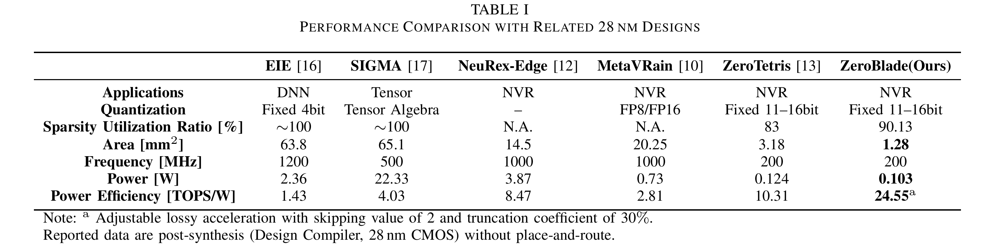
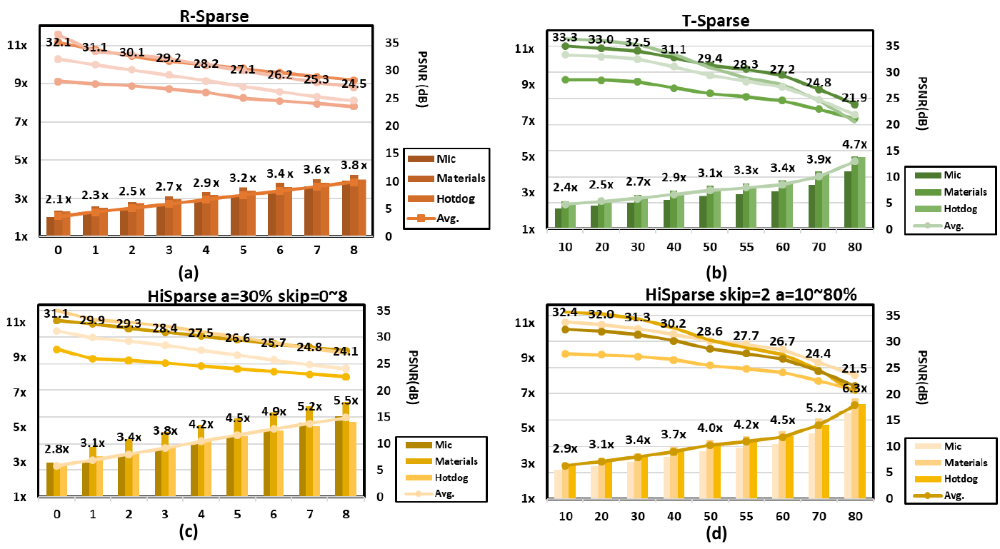
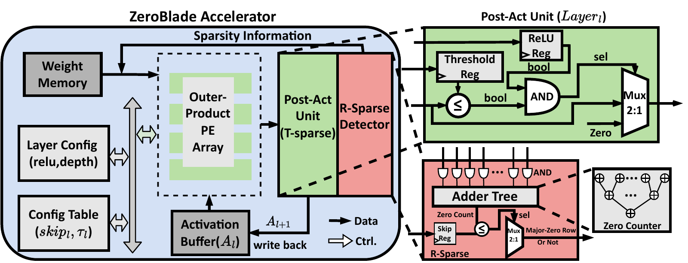
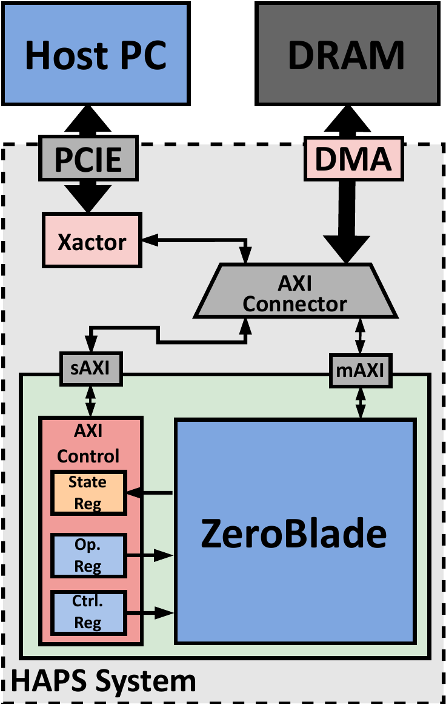
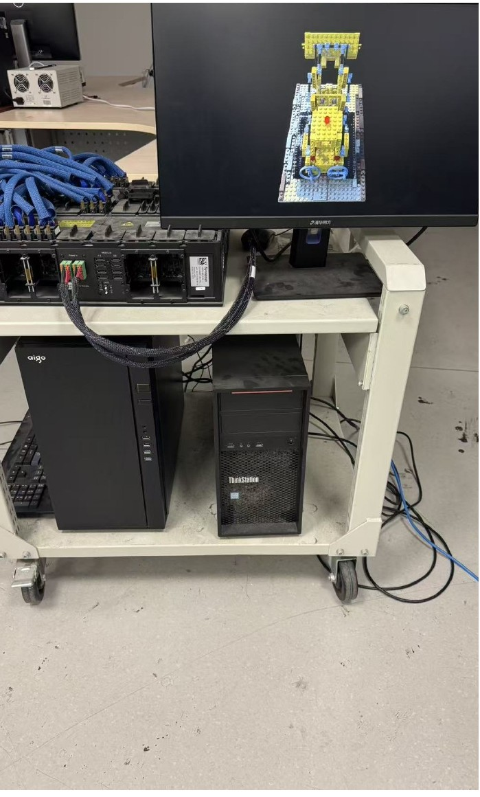
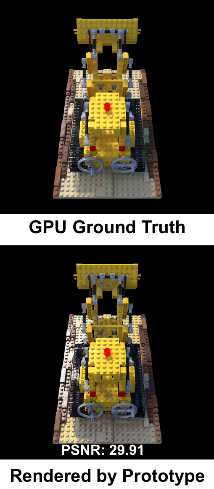
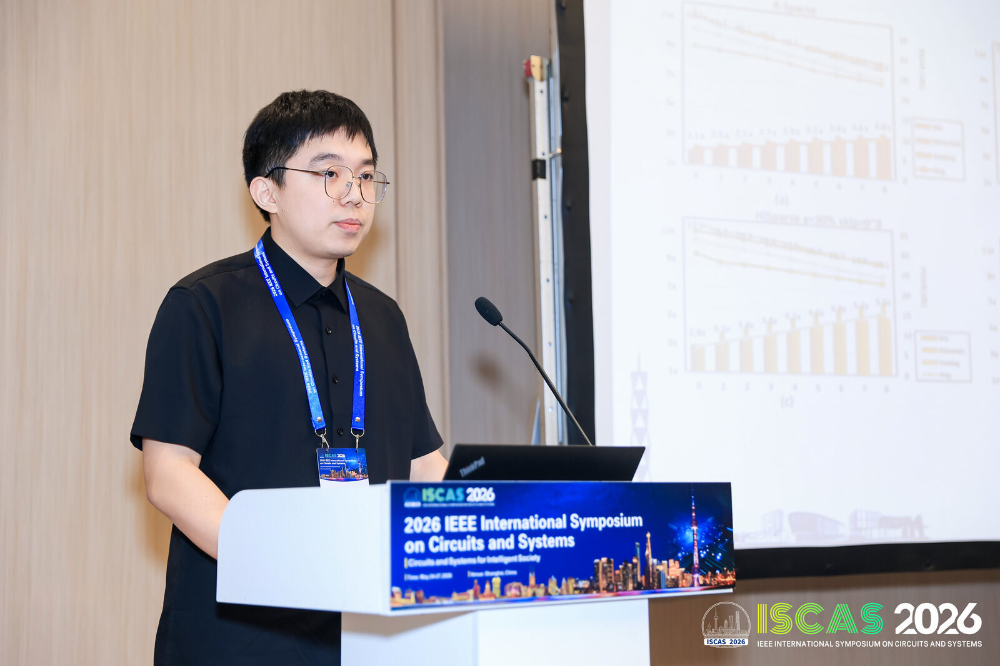
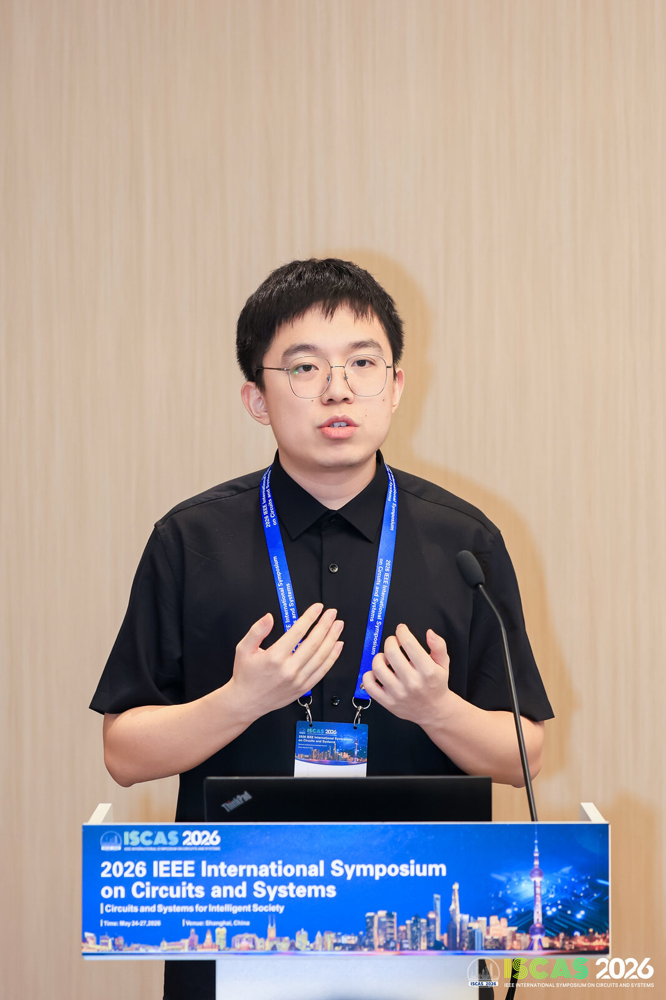
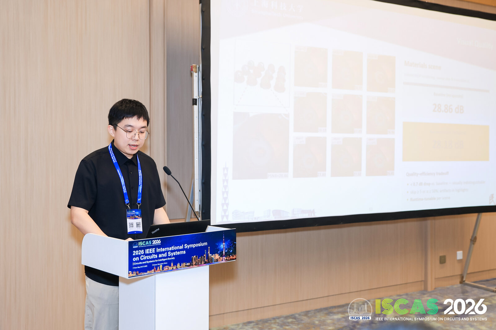
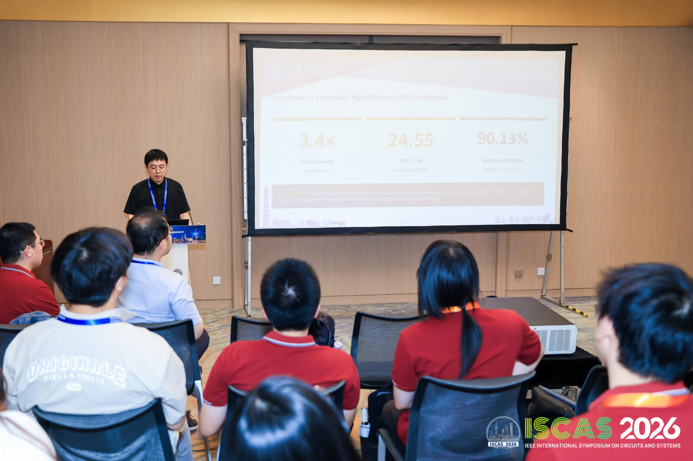

ZeroBlade
ZeroTetris 的下一代设计，提出 HiSparse 层级稀疏框架，将原先严格的全零跳过推广为可配置的粗粒度行跳过与细粒度阈值截断双模式，使精度与吞吐成为可调参数。算法实验、RTL 实现、HAPS-80 原型验证与 28nm 综合全流程均由本人独立完成。 The successor to ZeroTetris, introducing the HiSparse hierarchical sparsity framework, which generalizes strict all-zero skipping into two configurable modes: coarse-grained row skipping and fine-grained threshold truncation, rendering accuracy and throughput tunable. The algorithm study, RTL implementation, HAPS-80 prototyping and the full 28nm synthesis flow were carried out independently by me.
我的边界Scope of my contribution
- 独立完成Solely mine
- 算法侧稀疏度标定、全部 RTL、HAPS-80 原型验证、28nm 综合全流程。论文第一作者。 Sparsity calibration on the algorithm side, all RTL, HAPS-80 prototyping and the full 28nm synthesis flow. First author on the paper.
- 未做的部分What was not done
- 本设计止于 post-synthesis，没有流片。下面的面积与功耗数字来自综合报告，不是硅上实测。 This design stops at post-synthesis and was not taped out. The area and power figures below come from synthesis reports, not from silicon.
关键结果Key results
| 指标Metric | 数值Value | 口径Provenance |
|---|---|---|
| 峰值算力Peak throughput | 1024 MAC/cycle (16×16 × 4 组外积 PE 阵列outer-product PE groups) | 设计指标by design |
| HAPS-80 原型HAPS-80 prototype | 200 MHz, PSNR 29.91 dB (skip = 2, α = 30%) | 原型实测prototype |
| 28nm 面积28nm area | 1.284 mm² | DC post-synth |
| 功耗Power | 102.8 mW @ 200 MHz | DC post-synth |
| 能效Efficiency | 24.55 TOPS/W | DC post-synth |
| HiSparse 峰值加速HiSparse peak speedup | 3.4× | 综合 + 仿真synthesis + simulation |
能效优于 EIE、SIGMA、NeuRex-Edge、MetaVRain 等同代稀疏加速器。 Efficiency compares favourably against contemporaneous sparse accelerators including EIE, SIGMA, NeuRex-Edge and MetaVRain.

算法侧稀疏度标定Calibrating sparsity on the algorithm side
硬件阈值的取值需由实验确定。基于 tiny-cuda-nn 与 NeRFAcc 搭建实验框架，在 6 个 NeRF 场景 × 6 档 block_size × 200 个视角上扫描 PSNR / SSIM / 稀疏率，据此确定芯片端阈值。论文中的稀疏率-精度曲线即来自这组数据。 The on-chip threshold has to be determined experimentally. I built an experimental framework on tiny-cuda-nn and NeRFAcc, sweeping PSNR / SSIM / sparsity across 6 NeRF scenes × 6 block sizes × 200 viewpoints in order to fix the threshold used in hardware. That sweep is the source of the sparsity–accuracy curve reported in the paper.

RTL 与原型验证RTL and prototyping
以 SpinalHDL 实现约 9000 行 RTL：外积 PE 阵列为 16×16 MAC × 4 组，峰值 1024 MAC/cycle；阈值化激活单元采用 16 bit SInt、Q8.8 定点，支持 per-layer 独立配置。为支持可配置阈值，配置指令总线由 22 bit 扩展至 38 bit。可配置性存在代价，此处体现为指令带宽的增加。 Approximately 9,000 lines of RTL in SpinalHDL: an outer-product PE array of 16×16 MACs × 4 groups giving a peak of 1024 MAC/cycle, and a thresholding activation unit using 16-bit SInt in Q8.8 with per-layer configuration. Supporting a configurable threshold widened the configuration instruction bus from 22 to 38 bits. Configurability carries a cost, which here falls on instruction bandwidth.
在 Synopsys HAPS-80 S104（Xilinx XCVU440）上完成原型化。设计规模可在单片 FPGA 内容纳，无需 partitioning，从而避免了原型验证中最繁琐的环节。在 200 MHz 下复现 GPU 基线渲染，PSNR 为 29.91 dB。 Prototyping was carried out on a Synopsys HAPS-80 S104 (Xilinx XCVU440). The design fits within a single FPGA and requires no partitioning, which removes the most laborious step of prototyping. At 200 MHz it reproduces the GPU baseline render at PSNR 29.91 dB.
验证采用 SpinalSim + VCS 仿真，配合 PyTorch + fxpmath 定点 golden，做到 bit-level 对齐。 Verification used SpinalSim + VCS against a PyTorch + fxpmath fixed-point golden model, aligned at bit level.




ISCAS 2026 现场At ISCAS 2026
本工作于 2026 年 5 月在上海举行的 IEEE ISCAS 2026 上作口头报告，内容涵盖 HiSparse 两档稀疏模式对精度与吞吐的可调性，以及 HAPS-80 原型在 200 MHz 下 29.91 dB 的复现结果。 This work was presented orally at IEEE ISCAS 2026 in Shanghai in May 2026, covering how the two sparsity modes of HiSparse make accuracy and throughput jointly tunable, together with the HAPS-80 prototype result of 29.91 dB at 200 MHz.




相关论文Related publication
- ZeroBlade: A Spatial Similarity-aware HiSparse MLP Engine for Neural Volume Rendering — IEEE ISCAS 2026, pp. 1271–1275 · CCF-B · 第一作者 · CCF-B · first author DOI